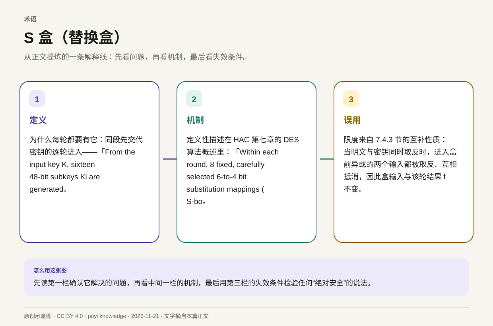

原理与机制
术语：S 盒（替换盒）（S-Box）。定义性描述在 HAC 第七章的 DES 算法概述里：「Within each round, 8 fixed, carefully selected 6-to-4 bit substitution mappings (S-boxes) Si, collectively denoted S, are used.」三个要点都在这句里：数量固定为八、映射是精心选定的、每轮都使用同一组表；每个盒把 6 位输入映到 4 位输出，集体记号为 S。

为什么重要
为什么每轮都要有它：同段先交代密钥的逐轮进入——「From the input key K, sixteen 48-bit subkeys Ki are generated, one for each round.」——随后才是盒的输入由数据与该轮子密钥共同决定。这一句支持的只是密钥必须逐轮参与替换这一结构事实；该小节（7.4.2）没有在此给出强度证明，强度材料在 7.4.3 节，该条目因此不作引申。
应用与实例
用法与出处落在 DES 细节：「Full details of DES are given in Algorithm 7.82 and Figures 7.9 and 7.10.」这句只点名 Algorithm 7.82 与 Figures 7.9–7.10；八个盒的完整取值由同一节稍后段落的 Table 7.8 提供（留存件把该表题印作 Table 7.8: DES S-boxes，表体位于该章后面的页面上）。至于如何使用 S 盒，留存件给出的答案就是按 6 位输入查表得到 4 位输出；该条目不复制表值，只登记位置，并说明这些表是固定常量、不随密钥改变。
边界与攻击面
限度来自 7.4.3 节的互补性质：当明文与密钥同时取反时，进入盒前异或的两个输入都被取反、互相抵消，因此盒输入与该轮结果 f 不变。该节给出的可利用形式是选择明文场景——「Checking if the key K with plaintext P1 yields either C1 or C2 now rules out two keys with one encryption operation」，即一次运算可同时排除两个候选密钥，从而把期望所需密钥数下降一个因子二（原文以带上标的 2 的幂写出该数，本存件丢了上标，故此处只作转述）。同节也明写该性质在已知明文穷举搜索中通常帮不上忙，并称这不是实际隐患。
历史与背景
版本事实与史学叙述：留存件首行说明它是《Handbook of Applied Cryptography》（CRC Press, 1996）的一章，页脚另印 1997 的版权行，两处年份不一致。关于 DES 的盒，7.8 注记节确实有史学叙述：它记录过去二十年反复出现又被否认的 DES 内建弱点（例如后门 S 盒）说法至今仍无实证，并在 Biham 与 Shamir 发现差分密码分析之后，记 Coppersmith 说明 DES 早先十五年就是针对差分而设计、因国家安全考虑既不公布攻击也不公布设计准则，随后给出与 S 盒及置换 P 相关的设计准则如何排除差分分析。该条目把这些记为该章的转述，而不是自行判定。
逐步示例与核验
定义检查模型
上位概念 → 区别特征 → 正例 → 反例 → 易混边界。正例必须落在外延内；反例必须刚好跨过边界；同义词不能代替定义。
参考出处
- Wikipedia search entry for S 盒（替换盒）. https://zh.wikipedia.org/w/index.php?search=S%20%E7%9B%92%EF%BC%88%E6%9B%BF%E6%8D%A2%E7%9B%92%EF%BC%89
- RFC 4949: Internet Security Glossary, Version 2. https://www.rfc-editor.org/rfc/rfc4949